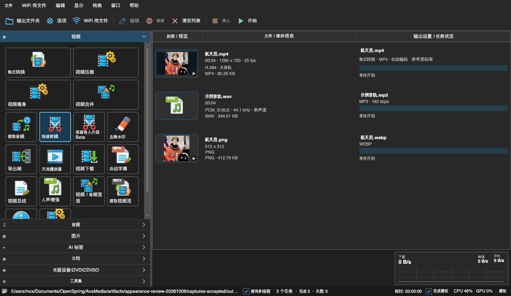

格式转换与压缩
视频、音频、图片互转；按质量、码率或目标体积压缩；分析画面后瘦身；合并、混流、提取轨道、修复重新封装。
AVAMEDIA — 天池万象转换 / 本地媒体工具箱
视频、音频、图片、PDF 在同一个工具箱里处理。每个耗时任务都拆成看得见的步骤，可以暂停，也能从任意一步重试。界面提供浅色、深色、Mac OS 9 和 Windows XP 四套皮肤。
Windows x64 · macOS Apple Silicon · 永久使用，无订阅 · 文件在本机处理
PHOTO · USGS / Kīlauea, 2018 · PUBLIC DOMAIN
01 / 多任务步骤界面
保留有人片段、自动字幕、视频总结、批量旋转、自动标签分类与媒体整理，都使用同一套多阶段任务窗口。
02 / 多主题 · 给复古爱好者
Mac OS 9 Platinum 与 Windows XP Luna 各有完整的窗口、按钮、标题栏和像素字体。切换皮肤立即生效，功能保持一致。

深色皮肤：深灰底色与蓝色强调，适合夜间长时间使用。
03 / 功能
视频、音频、图片互转；按质量、码率或目标体积压缩；分析画面后瘦身；合并、混流、提取轨道、修复重新封装。
多片段剪辑、裁剪、旋转、镜像、速度、淡入淡出与去水印；可按原格式快速复制导出。
本地语音识别，人工校对后导出字幕文件或烧录进视频；可单独做人声增强。
本地或线上模型分段理解画面与语音，生成带章节的报告；线上请求会明确提示。
给图片和视频打中文标签，按标签、语义、人物、时长等分组，复制或移动并可撤销。
检测人物出现的区间，复核后按原格式或重新编码导出。
播放列表、选轨、字幕、VR 视频；看图支持 HEIC，并能直接浏览压缩包里的图片。
可视化选页、排序、旋转、合并拆分，文字提取，图片或 TXT 转 PDF，压缩与做旧。
视频下载、局域网 WiFi 传文件、批量重命名与多宫格截图、DVD / VOB 与光盘转 ISO。
部分 AI 功能需要按需安装本地模型；识别与分类结果不保证完全准确。完整说明见软件内帮助。
04 / 定价
一次买断，永久使用。没有订阅，没有按月续费。
购买入口开通前，可在反馈区留言，上线时第一时间通知你。
PHOTO · USGS / Kīlauea, 2018 · PUBLIC DOMAIN
05 / 反馈
我们用公开的发布仓库收集反馈，也在这里发布每个新版本。